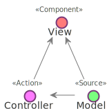
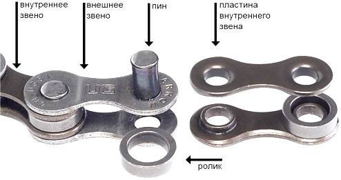
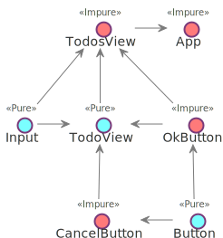
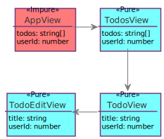

<!doctype html>
<html lang="en">
    <head>
        <meta charset="utf-8">
        <title>От фреймворков к сверхфреймворкам</title>
        <link rel="stylesheet" href="./css/reveal.css">
        <link rel="stylesheet" href="./theme/custom.css" id="theme">
        <link rel="stylesheet" href="./css/highlight/dracula.css">
        <link rel="stylesheet" href="./css/print/paper.css" type="text/css" media="print">

    </head>
    <body>

        <div class="reveal">
            <div class="slides"><section  data-markdown><script type="text/template">

## От фреймворков к сверхфреймворкам

<aside class="notes"><p>Меня зовут Сергей. В настоящее время работаю фронтенд-разработчиком в компании QIWI. До того, как заняться фронтенд-разработкой много лет писал на php, т.е. я могу сравнить как оно было тогда там и как сейчас у нас, на фронтенде. Я на примерах, сформулирую общие проблемы фронтенд фреймворков, расскажу как их можно исправить. В конце обрисую характеристки идеального сверхфреймворка, которые, на мой взгляд, сменят нашу современную экосистему.</p>
</aside></script></section><section  data-markdown><script type="text/template">
### WTF

- setState, redux, mobx, rxjs? <!-- .element: class="fragment" -->
- view + state coupling <!-- .element: class="fragment" -->
- smart = ctl, dumb = view<!-- .element: class="fragment" -->
- Один bootstrap <!-- .element: class="fragment" -->
- Отделить фреймворки <!-- .element: class="fragment" -->

<aside class="notes"><p>В разных приложениях по-разному меняется состояние и этот механизм тесно связан с версткой. Нет слоя, абстрагирующего нас от redux или mobx, setState. Например, мы делаем smart компонент на redux, а потом выясняется что его нужно переиспользовать в другом проекте с mobx. Верстка все еще тесно связана с логикой, поэтому мы делим компоненты на dumb и smart. Мы не можем сделать один универсальный полноценный material или bootstrap набор компонент. Когда мы берем angular, react, vue или что-то еще, то сильно привязываем код приложения к этим фреймворкам. Затруднен обмен решениями.</p>
</aside></script></section><section  data-markdown><script type="text/template">
### Убийцы архитектуры


<aside class="notes"><p>Причины этого в некоторых недочетах проектирования фреймворков или неправильных приоритов при проектировании, я их назвал &quot;убийцах архитектуры&quot;. Т.е. подходах, которые усложняют взаимозаменяемость частей программы и обмен решениями между разными экосистемами вокруг фреймворков. Решение проблемы лежит в хорошей архитектуре.</p>
</aside></script></section><section  data-markdown><script type="text/template">
### Эра монолитнго ядра

- Component = view + data + logic <!-- .element: class="fragment" -->
- Поверх - redux, mobx <!-- .element: class="fragment" -->
- Не поверх, а вместо <!-- .element: class="fragment" -->

<aside class="notes"><p>Сейчас большинство js-фреймворков - это обычно одно ядро, вокруг которого накручено много всего. Например, react занимается и подготовкой представления и состояние там есть, и логика вокруг него накручена. redux, mobx сторятся поверх этого ядра и управляют через него, это решения следствия, а не проблемы.</p>
</aside></script></section><section  data-markdown><script type="text/template">
### От ядру к слоям

- Легкий каркас, библиотека, интеграция <!-- .element: class="fragment" -->
- Микросервисы, микроядерность <!-- .element: class="fragment" -->
- PHP - Symfony, silex <!-- .element: class="fragment" -->
- JS - Angular2 <!-- .element: class="fragment" -->

<aside class="notes"><p>Если посмотреть, как развивались другие языки, например, java, php, то видно, что от монолитности постепенно переходят к концепции, когда фремворк - это очень легкий каркас для связи множества мелких библиотек через интерфейсы. Есть сторонняя библиотека, к ней пишется слой интеграции в фреймворк и дальше она используется как его часть. Даже говорят мета-фреймворк. Например: В PHP есть symfony, а есть его облегченная версия - silex, на тех же библиотеках, в Java аналогично с Spring. У нас, на фронтенде, наиболее близок к этой концепции - angular2, за исключением того, что сторонние библиотеки переизобретены командой angular2.</p>
</aside></script></section><section  data-markdown><script type="text/template">


<aside class="notes"><p>Общая тенденция в програмостоении такова - одну большую проблему разбиваем на много маленьких. Как-то так, причем кучи еще разноцветные.</p>
</aside></script></section><section  data-markdown><script type="text/template">
### Слои



<aside class="notes"><p>Все части проложения можно разделить по слоям - данные, представления, логика. Что чаще меняем, то делаем менее связаным с остальными частями. Могут быть разные вариации это подхода (FLUX например), но данные, логика и представления обычно разделяются.</p>
</aside></script></section><section  data-markdown><script type="text/template">


```js
class Some extends React.Component {
  render() {
    // ...
  }
}

```

<aside class="notes"><p>Я упомянул связи - стрелки. Они бывают сильные: когда extends React.Component или React.createElement замаскированный под jsx. Говорят, что код жесткий. Этот тип связей упрощает навигацию по проекту и отладку в отсутствии мощных IDE и др. инструментов разработчика, т.к. очевидно, что это за реализация. Можно посмотреть реализацию, по импортам попрыгать.</p>
</aside></script></section><section  data-markdown><script type="text/template">


```js
interface IUser {
  name: string;
}

function MyComponent(props: { user: IUser }) {
  return <div>{user.name}</div>
}
```

<aside class="notes"><p>Так и слабые: интерфейсы на props. Когда не очивдно, что за реализация IUser, она где то в другом месте задается. Для масштабирования и поддержки большого приложения важны как раз слабые связи. Проблема в том, что для работы с ними важны мощные инструменты разработки, IDE, flow, typescript. Иначе усложняется навигация и рефакторинг такого кода. Поэтому переход к слабой связанности - это вопрос взросления экосистемы и усложнения задач.  В JAVA, PHP переход был уже много лет назад, а у нас, во фронтенде, только начинает что-то появляться в виде ангулар2.</p>
</aside></script></section><section  data-markdown><script type="text/template">


- f(x) <!-- .element: class="fragment" -->
- f(context)(x) <!-- .element: class="fragment" -->
- new F(context).method(x) <!-- .element: class="fragment" -->

<aside class="notes"><p>Есть еще базовые кирпичи - это функции, которые мы рассовываем по слоям и связываем между собой. Сами функции бывают как чистые, так и с некоторым контекстом. Классы - это набор функций с контекстом в виде this.</p>
</aside></script></section><section  data-markdown><script type="text/template">
### Компоненты



<aside class="notes"><p>Применительно к компонентам. Все, кто программировал на реакте, знают, что компоненты бывают pure и statefull. Поведение первых зависит только от свойств, вторые от свойств и еще от контекста, под контекстом подразумевается и состояние и React.context, разница между ними только в реактивности.</p>
</aside></script></section><section  data-markdown><script type="text/template">
```js
function CounterView(props: {count: number}) {
  return <div>  Count: {props.count} </div>
}
```

- view = component(props)
- JSX + flow = контракт к шаблонам <!-- .element: class="fragment" -->
- Кастомизируемость <!-- .element: class="fragment" -->
- Рефакторинг: O(depth * props) <!-- .element: class="fragment" -->

<aside class="notes"><p>Чистый компонент, он же dumb, presentational - функция от свойств (иными словами шаблон, template). Основное преимущество в том, что все  или большинство ручек управления публичны, мы можем менять его поведение как угодно через них - т.е. компонент легко переиспользовать. Есть обротная сторона - сложно рефакторить приложение, по-большей части состоящее из таких компонент.</p>
</aside></script></section><section  data-markdown><script type="text/template">


<aside class="notes"><p>Представим, что состояние есть только в корневом компоненте страницы, а все остальное - из чистых компонент, вот свойство userId в TodoEditView стало не нужным, в результате нам надо удалить его из всей цепочки. т.к. оно просто транзитом прокидывается вниз от AppView. Из-за сложности рефакторинга O(depth * props), в реальном приложении не бывает только чистых компонент, это и отличает фронтенд от бэкенда, иначе это был бы просто шаблонизатор.</p>
</aside></script></section><section  data-markdown><script type="text/template">
### компонент != чистая функция

```js
function CounterView({count}) {
  return React.createElement('div', null, 'Count: ', count)
}
```

<aside class="notes"><p>Но если собрать с babel-preset-react то появится прямая зависимость от React. Нельзя переиспользовать чистый компонент в другом фреймворке, поддерживающим JSX. Однако, можно продолжить мысль и переиспользовать в рамках языка и среды, т.е. уменьшить долю каркаса, постоянной части до минимально возможной.</p>
</aside></script></section><section  data-markdown><script type="text/template">
### По-настоящему чистый

```js
function CounterView({count}, h: CreateElement) {
  return h('div', null, 'Count: ', count)
}
```

- Ослабить связь <!-- .element: class="fragment" -->
- babel plugin для автоматизации <!-- .element: class="fragment" -->

<aside class="notes"><p>Для этого надо ослабить связь с createElement, например, добавив в конец аргумент, реализующий интефейс createElement. Такой компонент можно где угодно переиспользовать, задав соотвествующий h. Конечно усложняется написание компонента, надо добавлять аргумент, но это легко автоматизируется через babel плагин.</p>
</aside></script></section><section  data-markdown><script type="text/template">
### Компонент с состоянием

- view = component(props)(state) <!-- .element: class="fragment" -->
- state - труднее кастомизировать <!-- .element: class="fragment" -->
- O((depth * subProps) + state) <!-- .element: class="fragment" -->
- props = subProps + state <!-- .element: class="fragment" -->

<aside class="notes"><p>Компонент с состянием кастомизировать сложнее, т.к. вся логика вокруг state - это приватные детали его реализации и расширять их мы больше не можем. Заранее не всегда можно сказать, потребуется ли менять или расширять их. Но с этим мирятся, т.к. приложение, где много компонент с состоянием легче рефакторить, публичных свойств меньше - часть их перетекает в state.</p>
</aside></script></section><section  data-markdown><script type="text/template">
```js
class CounterView
  extends React.Component<void, {name: string}, {count: number}> {

  state = {count: 1}

  constructor(props: Props) { super(props) }

  add() {
    this.setState({ count: this.count++ })
  }

  render() { /* ... */ }
```

- Сильно связан с React.Component <!-- .element: class="fragment" -->
- Конструктор занят под props <!-- .element: class="fragment" -->
- setState <!-- .element: class="fragment" -->

<aside class="notes"><p>React.Component - прямая завязка на реакт. Конструктор подчиняется неким негласным соглашением, что первый аргумент только props. Компонент привязан к setState и всему что вокруг него. Как же пытаются отделять состояние?</p>
</aside></script></section><section  data-markdown><script type="text/template">
<pre><code class="javascript"
>function CounterView(props: {count: number, add: () => void}) {
  return <div>
    {props.count}: <button onClick={add}>Add</button>
  </div>
}
</code></pre>
&nbsp;
<pre class="fragment"><code class="javascript"
>function mapStateToProps(store) {
  return { count: store.counter.count }
}
const CounterContainer = connect(mapStateToProps)(CounterView)
</code></pre>
&nbsp;

<pre class="fragment"><code class="javascript"
>&lt;Provider store={'XYZ'}&gt; // unsafe
  &lt;CounterContainer/&gt;
&lt;/Provider&gt;
</code></pre>

<aside class="notes"><p>Например, как в redux. Оборачивают чистый компонент в connect, а в точке входа провайдят store, через Provider. Почему в свойство стор = XYZ в последнем блоке? Потому что flow и ts не могут обнаружить несоотвествие типов с тем, что в mapStateToProps. Как работает Provider внутри?</p>
</aside></script></section><section  data-markdown><script type="text/template">
<pre class="fragment"><code class="javascript"
>class App extends React.Component {
  static childContextTypes = {
    store: PropTypes.object
  }

  getChildContext() {
    return { store: this.props.store }
  }

  render = &lt;CounterContainer/&gt;
}
</code></pre>
&nbsp;
<pre class="fragment"><code class="javascript"
>class CounterContainer extends React.Component {
  static contextTypes = {
    store: PropTypes.object
  }

  render = CounterView({ count: this.context.store.count })
}
</code></pre>

<aside class="notes"><p>Есть механизм React.context. В App мы регистрируем зависимости через getChildContext и childContextTypes. В CounterContainer мы вытаскиваем данные из контекста. Механизм этот страшный, фейсбуковцы сами его стыдятся, поэтому не сильно документируют. PropTypes - это эмуляция типизации, лохматое легаси со времен отсутствия flow. Такое решение не может нормально интегрироваться в ts или flow.</p>
</aside></script></section><section  data-markdown><script type="text/template">
<pre class="fragment"><code class="javascript"
>import Component from 'my-react-like'
</code></pre>
&nbsp;
<pre class="fragment"><code class="javascript"
>class CounterView
  extends Component<{name: string}, {count: number}> {

  some: Some

  constructor(some: Some) { super(); this.some = some }

  render() { /* ... */ }
}
// ...
</code></pre>
&nbsp;
<pre class="fragment"><code class="javascript"
>&lt;CounterView name={123} /&gt; // 0 errors
</code></pre>

Типы и JSX в Vue, Deku? <!-- .element: class="fragment" -->
</script></section><section  data-markdown><script type="text/template">


<aside class="notes"><p>Вообще, ui-фреймворков очень много, я не буду всех их упоминать. Сказать стоит пожалуй только про angular2, т.к. несмотря на свои недостатки, он среди всего этого зоопарка чуть приподнялся на ступеньку.</p>
</aside></script></section><section  data-markdown><script type="text/template">
```js
@Component({
  selector: 'my-counter',
  templateUrl: './counter.component.html'
})
class CounterView {
  counter: number = 0
  @Input name: string

  constructor(private counterService: CounterService) {}

  addCounter() {
    this.counter = this.counterService.add(this.counter)
  }
}
```

- Component = template + view model + logic <!-- .element: class="fragment" -->
- changeDetection - часть монолита <!-- .element: class="fragment" -->
- Как прикрутить mobx, не поверх, а вместо <!-- .element: class="fragment" -->
- context в constructor <!-- .element: class="fragment" -->

<aside class="notes"><p>Angular2: Один к одному сцепили шаблон, описание контракта к этому шаблону, модель, и логику по работе с ней. На ней слишком много отвественности. Нельзя прикрутить mobx, вместо, а не поверх changeDetection. Нельзя заменить changeDetection на свой, что может потребоваться как ради экспериментов, так и ради оптимизаций. Ребята из команды angular2 идею контекста сделали центральной. В итоге это гораздо ближе к нативному синтаксису typescript.</p>
</aside></script></section><section  data-markdown><script type="text/template">
<pre class="fragment"><code class="typescript"
>const Injectable = 0 as any

interface ITest {}
class CounterService {}

@Injectable()
class CounterView {
  constructor(private cs: CounterService, test: ITest) {}
}
</code></pre>

tsc --emitDecoratorMetadata test.ts <!-- .element: class="fragment" -->

<pre class="fragment"><code class="typescript"
>Reflect.metadata(CounterView, "design:paramtypes", [
  CounterService,
  Object
])
</code></pre>

ITest -> Object, WAT? <!-- .element: class="fragment" -->

<!-- .element: class="fragment" --> ``` map[ITest] = SomeClass ```

<aside class="notes"><p>Что бы магия заработала, ангуларовцы, слегка прогнув микрософт с их тайпскриптом, записывают сигнатуру конструктора в метаданные. Dependency injection ангулара, вместо CounterService подсовывает готовый объект. Это называется рефлексия, во многих языках она из коробки, в ts прибитая к декораторам и не работающая с интерфейсами. Например, итерфейсы просто заменяются на Object. map[ITest] = SomeClass можно делать в C# и Dart, однако в дартовом ангуларе не используется эта фича, в отличие от C# Ninject. Именно из-за слабого развития инструментов и типизации, позволяющих делать reflection, DI был так непопулярен у нас на фронтенде.</p>
</aside></script></section><section  data-markdown><script type="text/template">
### Angular2 templates

```js
@Component({
  selector: 'app',
  template: `{{cnt}} <button (click)="addSome()">Add</button>`
})
export class CouterView {
  counter: number = 0
  add(){
    this.counter += 1
  }
}
```

- Типы в шаблонах <!-- .element: class="fragment" -->
- typescript проигнорирует counterSome<!-- .element: class="fragment" -->
</script></section><section  data-markdown><script type="text/template">

</script></section><section  data-markdown><script type="text/template">
### vue only


<aside class="notes"><p>В продолжении темы монолитов следует сказать про копипаст. Я уже говорил про универсальный каркас, куда интегрируются сторонние либы. Так вот на фронтенде его нет, каждый переизобретает этот каркас в своем ядре. Причем мыслят старыми категориями безтипового js, без DI. Поэтому vuex работает только с vue.</p>
</aside></script></section><section  data-markdown><script type="text/template">
### Deku

```js
const MyButton = {
  render({ props, children, dispatch }) {
    return <button onClick={log(dispatch)}>{children}</button>
  }
}

const store = createStore(reducer)

const render = createApp(document.body, store.dispatch)
```

- JSX <!-- .element: class="fragment" -->
- no flow <!-- .element: class="fragment" -->
- redux only <!-- .element: class="fragment" -->


<aside class="notes"><p>Deku прибит к redux и не работает без него</p>
</aside></script></section><section  data-markdown><script type="text/template">
- react-router
- react-router-redux <!-- .element: class="fragment" -->
- mobx-react-router <!-- .element: class="fragment" -->
- inferno-router <!-- .element: class="fragment" -->
- vue-router <!-- .element: class="fragment" -->
- vuex-router-sync <!-- .element: class="fragment" -->

<aside class="notes"><p>Роутеры переизобретаются в разных сочетаниях тоже по причине не продуманности базовых вещей. Они делают все одно и тоже, в зависимости от пути в строке бразурера отдают компонент. А копипастить код приходится из-за отсутствия универсальых интерфейсов интеграции этих библиотек c состоянием.</p>
</aside></script></section><section  data-markdown><script type="text/template">
- inferno-redux
- inferno-mobx <!-- .element: class="fragment" -->
- inferno-test-utils <!-- .element: class="fragment" -->

<aside class="notes"><p>Inferno, пытаясь отхватить кусок пирога React вообще породил сранное явление - конвертацию модулей реакта.</p>
</aside></script></section><section  data-markdown><script type="text/template">


Vendor lock-in everywhere

<aside class="notes"><p>Механизма обмена решениями между фреймворками нет. Выбрав один путь - придется и выбрать экосистему вокруг фреймворка. Конкрурировать в этой гонке могут только те, у кого больше ресурсов для хайпа.</p>
</aside></script></section><section  data-markdown><script type="text/template">
### Конкуренция

- Типовой жирный код <!-- .element: class="fragment" -->
- Монолит <!-- .element: class="fragment" -->
- Подсадить на фреймворк <!-- .element: class="fragment" -->
- Одиночки в худшем положении <!-- .element: class="fragment" -->
</script></section><section  data-markdown><script type="text/template">
#### Оптимизация = конкуренция


- Хайп 5 > 3 <!-- .element: class="fragment" -->
- Архитектура: связанность, сцепленность <!-- .element: class="fragment" -->
- react fiber, vdom, prepack, inferno <!-- .element: class="fragment" -->
- Не имеет отношения к решению <!-- .element: class="fragment" -->


<aside class="notes"><p>Про оптимизацию слишком много хайпа, в основном, все современные тенденции во фронтенде это про то, кто больше попугаев покажет в ui-bench: fiber, vdom, prepack, inferno. Оптимизация нужна из-за отставания браузеров от бизнес задач и медленной скорости их развития из-за легаси из которого состоит web. Так проще конкурировать, цифрами убедить проще, т.к. меньше надо знать. React 3 попугая выдает, Inferno 5, значит Inferno лучше. Конкурировать, доказывая архитектурные преимущества, гораздо сложнее. Т.к. проявляются эти преимущества не сразу и на достаточно больших задачах, увидеть их можно только в сравнении, пройдя опыт и говнокодной разработки.</p>
</aside></script></section><section  data-markdown><script type="text/template">
#### Оптимизации в приложении

```js
class CounterView extends React.Component {
  state = {count: 0}

  shouldComponentUpdate(nextProps, nextState) {
    return nextState.count === this.state.count
  }

  _add = () => this.setState({ count: this.state.count++ })

  render() {
    return <div>{this.props.name}: {this.state.count}
      <button onClick={this._add}>Add</button>
    </div>
  }
}
```

<aside class="notes"><p>Оптимизация в приложении - это доп. код, который может содержать логические ошибки и анализаторы не помогут их отловить. А вы нашли тут багу, не? Вот flow не нашел.</p>
</aside></script></section><section  data-markdown><script type="text/template">
### Angular

```js
@Component({
  selector: 'app',
  changeDetection: ChangeDetectionStrategy.OnPush,
  template: `{{counter}} <button (click)="add()">Add</button>`
})
export class CouterView {
  public counter : number = 0;
  constructor(private cd: ChangeDetectorRef) {}

  add() {
    this.counter += 1
    this.cd.markForCheck()
  }
}
```

- Event -> viewRef.detectChanges <!-- .element: class="fragment" -->
- Minesweeper <!-- .element: class="fragment" -->
- OnPush = shouldComponentUpdate <!-- .element: class="fragment" -->

<aside class="notes"><p>Думаете в angular2 лучше? Там на любое событие дерагется detectChanges. Это видимо тормозной на больших приложениях механизм, который правильнее было бы не делать в ангуларе вовсе, а вынести в стороннее решение. Тут changeDetection.OnPush такой же костыль как и shouldComponentUpdate.</p>
</aside></script></section><section  data-markdown><script type="text/template">


<aside class="notes"><p>Это я к тому, что оптимизация в коде приложения не нормальное явление, как нам пытаются преподнести из многочисленных маркетинговых докладов. Это признание несостоятельности идеи или реализации фреймворка касательно автоматической оптимизации. Кто-нибудь помнит, как нам несколько лет назад был хайп о том, что VDOM в реакте вообще позволит не парится об оптимизации, все сделает за вас.</p>
</aside></script></section><section  data-markdown><script type="text/template">
### Mobx

- cellx, derivablejs, glimmer, mol
- Обратился к свойству - подписался<!-- .element: class="fragment" -->
- Ранняя точная оптимизация без VDOM <!-- .element: class="fragment" -->

<aside class="notes"><p>В свете оптимизации стоит упомянуть mobx и идейно похожие решения - derivable, cellx, mol_atom. Это все реализации ненавязчивых стримов. Подписка компонента на изменения в данных происходит в момент обращения к свойствам. Оптимизация происходит раньше, в слое данных, а не в VDOM (react) или в компонентах (angular). В подобных решения VDOM не нужен.</p>
</aside></script></section><section  data-markdown><script type="text/template">
```js
const CounterView = observer(store => <div>{store.count}</div>)

const AppView = observer(store => <div>
  <CounterView count={store}/>
</div>)

class Store {
  @observable count: number = 0
}

const store = new Store()
React.render(<AppView store={store} />, document.body)

store.count = 1 // rerender
```

<aside class="notes"><p>Компоненты подписываются непосредственно на те свойства, которые они используют в Store. Можно все компоненты сделать observer-ами, но только CounterView обращается к store.count, поэтому при изменении count, будет перерисован только он. Эта идея дает гораздо больше резервов оптимизации.</p>
</aside></script></section><section  data-markdown><script type="text/template">
```js
const CounterView = /*observer*/(store => <div>{store.count}</div>)

const AppView = /*observer*/(store => <div>
  <CounterView count={store}/>
</div>)

class Store {
  /*@observable*/ count: number = 0
}

const store = new Store()
React.render(<AppView store={store} />, document.body)

store.count = 1 // rerender
```

<aside class="notes"><p>Фреймворк - это каркас, с точками расширения, куда мы ваставляем данные, логику и верстку, а что если уменьшить долю каркаса до 0? Зависимость от React и mobx перейдет в зависимость от спецификации и подхода к разработке. Это позволит быть менее зависимым от хайпа.</p>
</aside></script></section><section  data-markdown><script type="text/template">
```js
class Counter { count = 0 }

function Hello(
    // public
    {text}: { text: string; },

    // private
    {counter}: { counter: Counter; }
) {
    return <div>
        <h1>{text} {counter.count}</h1>
    </div>
}
```

Reactive-di view

<aside class="notes"><p>Чистая верстка, с контрактом и разделением на публичный интрефейс (props) и приватный (context). Также, никаких декораторов и зависимостей от фреймворков.</p>
</aside></script></section><section  data-markdown><script type="text/template">
```js
function Counter() { this.count = 0 }

function Hello(_ref, _ref2, _t) {
    var text = _ref.text;
    var counter = _ref2.counter;

    return _t.h(2, 'div', null, [
      _t.h(2, 'h1', null, ['count ', counter.count])
    ]);
}

Hello._isComponent = true;
Hello._dependencies = [{ counter: Counter }];
```

context = DI + metadata

<aside class="notes"><p>С помощью babel-плагина к компоненту добавляются метаданные. По метаданным движок reactive-di отличает свои компоненты от реактовых, решается проблема легаси.</p>
</aside></script></section><section  data-markdown><script type="text/template">
- 15й стандарт
- Совместим с 14м (React) <!-- .element: class="fragment" -->
- Работает legacy <!-- .element: class="fragment" -->
- Поддерживается в flow <!-- .element: class="fragment" -->
- Ъ-Чистые <!-- .element: class="fragment" -->
-  <!-- .element: class="fragment" --> ~~Smart, dumb~~
</script></section><section  data-markdown><script type="text/template">
- React - View <!-- .element: class="fragment" -->
- Mobx - Model <!-- .element: class="fragment" -->
- Reactive-di - Окружение, все внутри стримов <!-- .element: class="fragment" -->

<aside class="notes"><p>reactive-di: вместо зависимостей от библиотек мы получаем зависимости от спецификаций. Фреймворк переносится из кода приложения в среду исполнения.</p>
</aside></script></section><section  data-markdown><script type="text/template">
### !!!

- Экосистема вокруг типов<!-- .element: class="fragment" -->
- Слои: data - ui - business logic <!-- .element: class="fragment" -->
- Ненавязчивость (mobx)<!-- .element: class="fragment" -->
- KISS<!-- .element: class="fragment" -->
- КПД: 3-4 (angular -  15K, inferno - 5K)<!-- .element: class="fragment" -->
</script></section><section  data-markdown><script type="text/template">


<aside class="notes"><p>Через тернии к звездам. Идеального решения пока нет. Надеюсь я смог показать, что в нашей любимой фронденд архитектуре есть проблемы, которые не заметны с близкого расстояния, но видны на большом. Идеи ненавязчивых потоков и инверсии зависимостей заслуживают больше внимания. Хотелось бы больше альтернатив mobx и angular2. Я, вышеозвученные характеристики реализовываю в reactive-di. А всем желаю уделять больше внимания базовым, идейным вещам, а меньше маркетинговым - хайповым, тогда наша работа станет комфортнее.</p>
</aside></script></section><section  data-markdown><script type="text/template">
- [github.com/zerkalica/reactive-di](https://github.com/zerkalica/reactive-di)
</script></section></div>
        </div>

        <script src="./lib/js/head.min.js"></script>
        <script src="./js/reveal.js"></script>

        <script>
            function extend() {
              var target = {};
              for (var i = 0; i < arguments.length; i++) {
                var source = arguments[i];
                for (var key in source) {
                  if (source.hasOwnProperty(key)) {
                    target[key] = source[key];
                  }
                }
              }
              return target;
            }

            // Optional libraries used to extend on reveal.js
            var deps = [
              { src: './lib/js/classList.js', condition: function() { return !document.body.classList; } },
              { src: './plugin/markdown/marked.js', condition: function() { return !!document.querySelector('[data-markdown]'); } },
              { src: './plugin/markdown/markdown.js', condition: function() { return !!document.querySelector('[data-markdown]'); } },
              { src: './plugin/highlight/highlight.js', async: true, callback: function() { hljs.initHighlightingOnLoad(); } },
              { src: './plugin/zoom-js/zoom.js', async: true },
              { src: './plugin/notes/notes.js', async: true },
              { src: './plugin/math/math.js', async: true }
            ];

            // default options to init reveal.js
            var defaultOptions = {
              controls: true,
              progress: true,
              history: true,
              center: true,
              transition: 'default', // none/fade/slide/convex/concave/zoom
              dependencies: deps
            };

            // options from URL query string
            var queryOptions = Reveal.getQueryHash() || {};

            var options = {"showNotes":false,"slideNumber":true,"theme":"custom","transition":"none"};
            options = extend(defaultOptions, options, queryOptions);
            Reveal.initialize(options);
        </script>
        
    </body>
</html>
